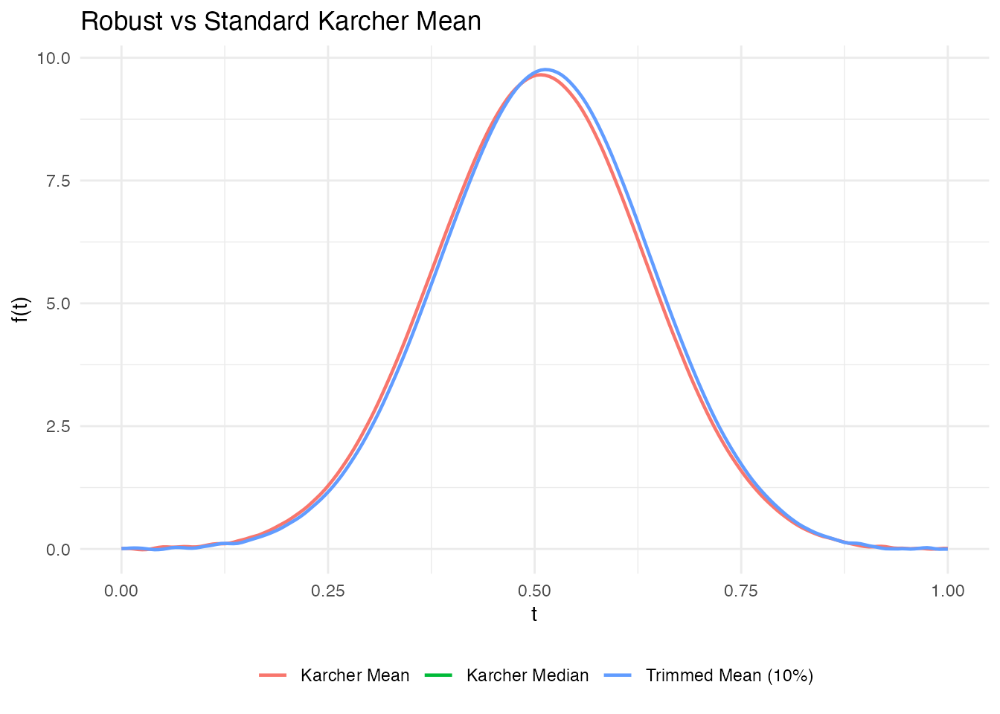
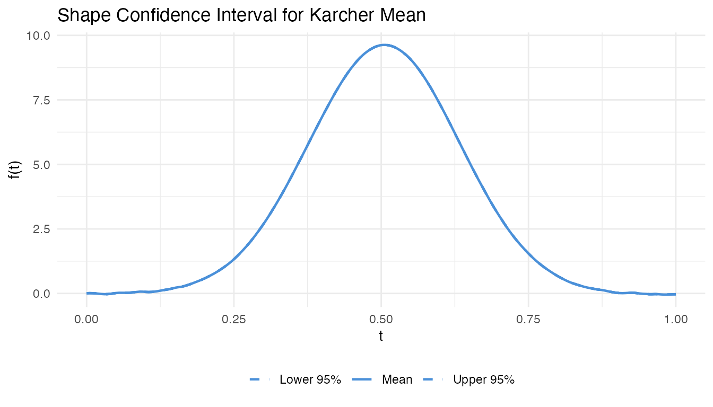
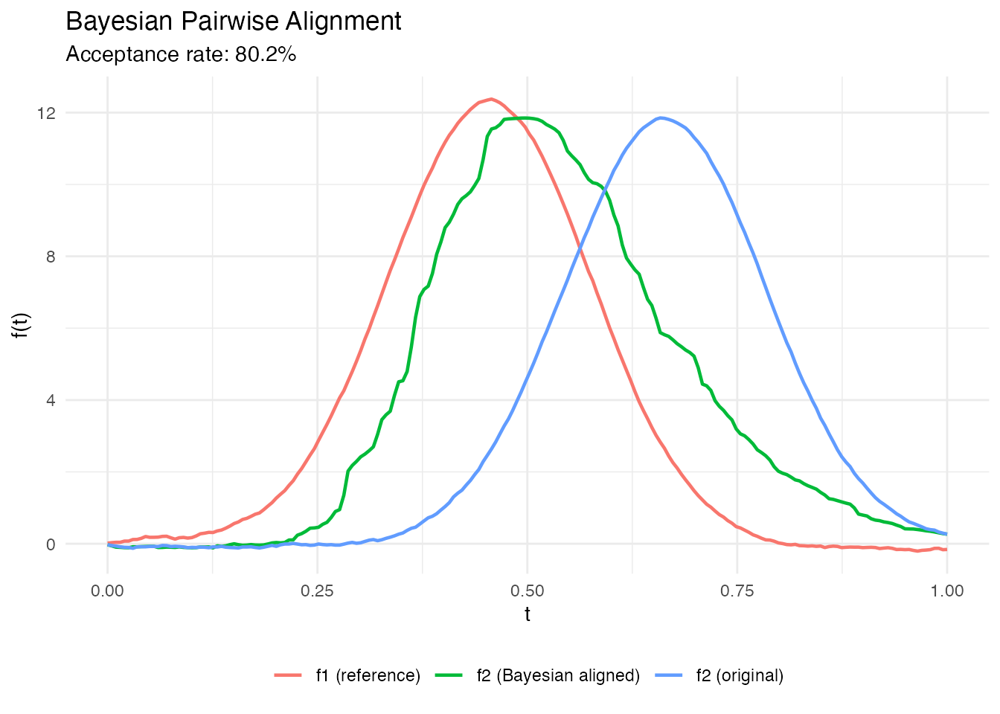
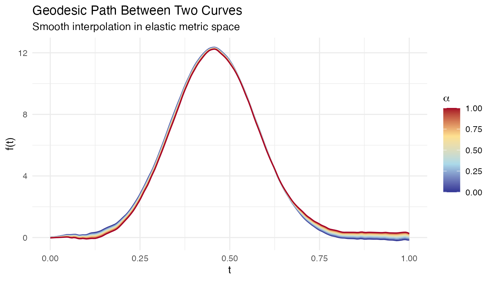
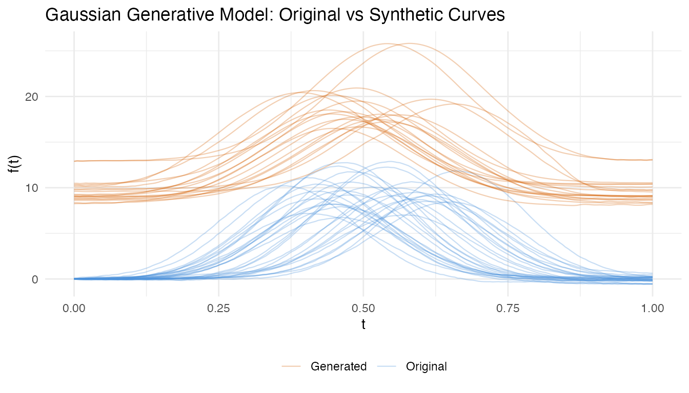

Introduction
This article covers the advanced alignment methods introduced in fdars-core 0.10.0. These extend the foundational elastic alignment framework (see Elastic Curve Alignment) with robust estimation, uncertainty quantification, specialized geometries, and diagnostic tools.
All methods operate on the elastic manifold defined by the Square-Root Slope Function (SRSF) representation , which converts the Fisher-Rao metric to the metric on the Hilbert sphere (Srivastava et al., 2011).
library(fdars)
#>
#> Attaching package: 'fdars'
#> The following objects are masked from 'package:stats':
#>
#> cov, decompose, deriv, median, sd, var
#> The following object is masked from 'package:base':
#>
#> norm
library(ggplot2)
library(patchwork)
theme_set(theme_minimal())
set.seed(42)
# Simulated curves with amplitude and phase variability
n <- 30
t_grid <- seq(0, 1, length.out = 200)
fd_list <- lapply(seq_len(n), function(i) {
amp <- rnorm(1, 3, 0.5)
shift <- rnorm(1, 0.5, 0.08)
noise <- cumsum(rnorm(200, 0, 0.02))
amp * dnorm(t_grid, mean = shift, sd = 0.12) + noise
})
fd <- fdata(do.call(rbind, fd_list), argvals = t_grid)1. Robust Karcher Mean and Median
Motivation
The standard Karcher mean minimizes the sum of squared elastic distances and is sensitive to outlier curves. For contaminated data, two alternatives exist:
- Karcher median: minimizes the sum of (unsquared) distances via the Weiszfeld algorithm on the elastic manifold – the functional analog of the geometric median.
- Trimmed Karcher mean: removes the most distant curves before computing the mean.
Mathematical Background
The Karcher median on a Riemannian manifold is defined as:
This is solved iteratively using the Weiszfeld algorithm adapted to manifolds (Fletcher et al., 2009): at each step, compute the weighted Frechet mean where weights are inversely proportional to distances from the current estimate.
The trimmed Karcher mean removes the most distant curves (in elastic distance) before computing the standard Karcher mean, following the approach of Cuesta-Albertos & Fraiman (2007) extended to the elastic manifold.
# Standard Karcher mean (reference)
km <- karcher.mean(fd, max.iter = 15)
# Karcher median (robust to outliers)
kmed <- karcher.median(fd, max.iter = 15)
# Trimmed Karcher mean (remove 10% most distant curves)
km_trimmed <- robust.karcher.mean(fd, trim = 0.1, max.iter = 15)
# Compare the three estimates
km_vals <- as.numeric(km$mean$data[1, ])
kmed_vals <- as.numeric(kmed$mean$data[1, ])
ktrim_vals <- as.numeric(km_trimmed$mean$data[1, ])
# Ensure all same length (use km argvals as reference)
km_t <- as.numeric(km$mean$argvals)
df_means <- data.frame(
t = rep(km_t, 3),
value = c(km_vals, kmed_vals[seq_along(km_vals)],
ktrim_vals[seq_along(km_vals)]),
method = rep(c("Karcher Mean", "Karcher Median", "Trimmed Mean (10%)"),
each = length(km_t))
)
ggplot(df_means, aes(x = .data$t, y = .data$value, color = .data$method)) +
geom_line(linewidth = 0.8) +
labs(title = "Robust vs Standard Karcher Mean",
x = "t", y = "f(t)", color = NULL) +
theme(legend.position = "bottom")
#> Warning: Removed 200 rows containing missing values or values outside the scale range
#> (`geom_line()`).
References:
- Fletcher, P. T., Venkatasubramanian, S., & Joshi, S. (2009). The geometric median on Riemannian manifolds with application to robust atlas estimation. NeuroImage, 45(1), S143–S152. DOI: 10.1016/j.neuroimage.2008.10.052
- Cuesta-Albertos, J. A. & Fraiman, R. (2007). Impartial trimmed k-means for functional data. Computational Statistics & Data Analysis, 51(10), 4864–4877.
2. Elastic Depth
Motivation
Functional depth measures how “central” a curve is in a sample. Standard depth (e.g., MBD) ignores phase variability – two curves may have similar depth despite one being time-warped. Elastic depth decomposes the depth into amplitude and phase components using elastic distances.
Method
For each curve , the elastic depth is computed as:
where is the average elastic distance from to all other curves. The decomposition into amplitude and phase depths uses the aligned vs unaligned distances:
- Amplitude depth: based on distances after alignment
- Phase depth: based on the warping function complexity
# Elastic depth with amplitude/phase decomposition
ed <- elastic.depth(fd)
cat("Amplitude depth range:", round(range(ed$amplitude_depth), 3), "\n")
#> Amplitude depth range: 0.48 0.556
cat("Phase depth range: ", round(range(ed$phase_depth), 3), "\n")
#> Phase depth range: 0.734 0.772
cat("Combined depth range: ", round(range(ed$combined_depth), 3), "\n")
#> Combined depth range: 0.6 0.652
cat("Deepest curve (most central):", which.max(ed$combined_depth), "\n")
#> Deepest curve (most central): 11References:
- Lopez-Pintado, S. & Romo, J. (2009). On the concept of depth for functional data. Journal of the American Statistical Association, 104(486), 718–734. DOI: 10.1198/jasa.2009.0108
- Srivastava, A. & Klassen, E. P. (2016). Functional and Shape Data Analysis. Springer. Chapter 9: Statistical Summaries.
3. SRVF Outlier Detection
Motivation
Outlier detection in the elastic framework accounts for both amplitude and phase anomalies. A curve can be an outlier because it has an unusual shape (amplitude outlier), an unusual timing (phase outlier), or both.
Method
Elastic outlier detection computes the distance from each curve to a reference (mean or median) and applies Tukey fence thresholding:
where is typically 1.5. The amplitude/phase decomposition classifies outliers into types.
# Outlier detection with amplitude/phase decomposition
outliers <- elastic.outlier.detection(fd)
cat("Outlier indices:", if (length(outliers$outlier_indices) > 0)
paste(outliers$outlier_indices, collapse = ", ") else "none", "\n")
#> Outlier indices: none
cat("Threshold:", round(outliers$threshold, 4), "\n")
#> Threshold: 1.0662
cat("Distance range:", round(range(outliers$distances), 4), "\n")
#> Distance range: 0.4751 0.8892References:
- Xie, W., Kurtek, S., Bharath, K., & Sun, Y. (2017). A geometric approach to visualization of variability in functional data. Journal of the American Statistical Association, 112(519), 979–993. DOI: 10.1080/01621459.2016.1256813
- Dai, W. & Genton, M. G. (2018). Functional boxplots. Journal of Computational and Graphical Statistics, 20(2), 316–334.
4. Shape Confidence Intervals
Motivation
After computing the Karcher mean, how certain are we about its shape? Shape confidence intervals provide bootstrap confidence bands for the elastic mean, quantifying estimation uncertainty.
Method
- Resample bootstrap samples from the original curves
- For each sample, compute the Karcher mean
- Align all bootstrap means to the original mean
- Compute pointwise percentile bands (e.g., 2.5% and 97.5%)
The alignment step is crucial: without it, phase variability between bootstrap means inflates the bands artificially.
# Bootstrap confidence bands for the Karcher mean
ci <- shape.confidence.interval(fd, n.bootstrap = 50, max.iter = 10)
df_ci <- data.frame(
t = rep(t_grid, 3),
value = c(ci$lower_band, as.numeric(ci$mean$data[1, ]), ci$upper_band),
type = rep(c("Lower 95%", "Mean", "Upper 95%"), each = length(t_grid))
)
ggplot(df_ci, aes(x = .data$t, y = .data$value, linetype = .data$type)) +
geom_line(color = "#4A90D9", linewidth = 0.8) +
scale_linetype_manual(values = c("Lower 95%" = "dashed",
"Mean" = "solid",
"Upper 95%" = "dashed")) +
labs(title = "Shape Confidence Interval for Karcher Mean",
x = "t", y = "f(t)", linetype = NULL) +
theme(legend.position = "bottom")
References:
- Kurtek, S. & Marron, J. S. (2017). Elastic shape analysis of boundaries of planar objects. Annals of Applied Statistics, 11(3), 1490–1521. DOI: 10.1214/17-AOAS1059
- Srivastava, A. & Klassen, E. P. (2016). Functional and Shape Data Analysis. Springer. Chapter 8: Statistical Analysis of Shapes.
5. Bayesian Alignment
Motivation
Standard dynamic programming alignment yields a point estimate of the warping function. Bayesian alignment provides a posterior distribution over warping functions, enabling uncertainty quantification: credible bands on aligned curves, posterior predictive distributions, and model comparison.
Method
The method uses the preconditioned Crank-Nicolson (pCN) MCMC sampler on the Hilbert sphere (Cotter et al., 2013), adapted for functional alignment by Cheng et al. (2016). The prior over warping functions is a Dirichlet process or Gaussian process on the sphere of SRSFs; the likelihood measures the fit between the SRSFs after warping.
The pCN proposal
ensures dimension-independent acceptance rates, making the algorithm scalable to fine time grids.
# Bayesian alignment of two curves
ba <- bayesian.align.pair(fd$data[1, ], fd$data[2, ],
argvals = t_grid,
n.samples = 500, burn.in = 100)
cat("Acceptance rate:", round(ba$acceptance_rate, 3), "\n")
#> Acceptance rate: 0.802
# Plot original vs Bayesian-aligned
df_ba <- data.frame(
t = rep(t_grid, 3),
value = c(fd$data[1, ], fd$data[2, ], ba$f_aligned_mean),
curve = rep(c("f1 (reference)", "f2 (original)", "f2 (Bayesian aligned)"),
each = length(t_grid))
)
ggplot(df_ba, aes(x = .data$t, y = .data$value, color = .data$curve)) +
geom_line(linewidth = 0.8) +
labs(title = "Bayesian Pairwise Alignment",
subtitle = sprintf("Acceptance rate: %.1f%%", 100 * ba$acceptance_rate),
x = "t", y = "f(t)", color = NULL) +
theme(legend.position = "bottom")
References:
- Cheng, W., Dryden, I. L., & Huang, X. (2016). Bayesian registration of functions and curves. Bayesian Analysis, 11(2), 447–481. DOI: 10.1214/15-BA957
- Cotter, S. L., Roberts, G. O., Stuart, A. M., & White, D. (2013). MCMC methods for functions: modifying old algorithms to make them faster. Statistical Science, 28(3), 424–446. DOI: 10.1214/13-STS421
- Lu, Y., Herbei, R., & Kurtek, S. (2017). Bayesian registration of functions with a Gaussian process prior. Journal of Computational and Graphical Statistics, 26(4), 894–904.
6. Multi-Resolution Alignment
Motivation
Dynamic programming alignment has complexity, making it slow for long curves (). Multi-resolution alignment performs a coarse alignment on a subsampled grid, then refines on the original resolution – achieving near-optimal alignment in time.
Method
- Coarse stage: Subsample the curve to points and run DP alignment to get an approximate warping path
- Fine stage: Use the coarse warp as initialization for gradient refinement (e.g., L-BFGS) on the full-resolution grid
This is related to the FastDTW approach (Salvador & Chan, 2007) but adapted to the elastic (SRSF) framework.
# Multi-resolution alignment (faster for long curves)
mr <- elastic.align.pair.multires(fd$data[1, ], fd$data[2, ],
argvals = t_grid,
coarsen.factor = 4)
cat("Multi-res distance:", round(mr$distance, 4), "\n")
#> Multi-res distance: 1.0429
# Compare with standard DP alignment
std <- elastic.align(fdata(matrix(c(fd$data[1, ], fd$data[2, ]), nrow = 2),
argvals = t_grid))
cat("Standard DP distance:", round(std$distance[1], 4), "\n")
#> Standard DP distance: 0.4087References:
- Salvador, S. & Chan, P. (2007). Toward accurate dynamic time warping in linear time and space. Intelligent Data Analysis, 11(5), 561–580. DOI: 10.3233/IDA-2007-11508
- Robinson, D. T. (2012). Functional data analysis and partial shape matching in the square root velocity framework. PhD Thesis, Florida State University.
7. Closed Curve Alignment
Motivation
Closed curves (e.g., cell boundaries, periodic signals) require alignment that accounts for the circular starting point ambiguity: the same closed curve can be parameterized starting from any point on its boundary. Standard alignment fixes the starting point and misses this degree of freedom.
Method
Closed curve alignment adds an optimization over the starting point rotation in addition to the warping function :
The optimization uses a coarse-to-fine search: evaluate elastic distances at uniformly-spaced rotations, then refine the best candidate with gradient descent.
# Create periodic curves (simulate closed shapes)
closed1 <- sin(2 * pi * t_grid) + 0.3 * sin(4 * pi * t_grid)
closed2 <- sin(2 * pi * (t_grid - 0.1)) + 0.4 * sin(4 * pi * (t_grid - 0.1))
# Align closed curves
ca <- elastic.align.pair.closed(closed1, closed2, t_grid)
cat("Closed alignment distance:", round(ca$distance, 4), "\n")
#> Closed alignment distance: 0.096
cat("Optimal rotation index:", ca$optimal_rotation, "\n")
#> Optimal rotation index: 20
# Karcher mean for closed curves
fd_closed <- fdata(rbind(closed1, closed2,
sin(2*pi*(t_grid+0.05)) + 0.35*sin(4*pi*(t_grid+0.05))),
argvals = t_grid)
km_c <- karcher.mean.closed(fd_closed, max.iter = 10)
cat("Closed Karcher mean converged:", km_c$converged, "\n")
#> Closed Karcher mean converged: FALSEReferences:
- Srivastava, A., Klassen, E., Joshi, S. H., & Jermyn, I. H. (2011). Shape analysis of elastic curves in Euclidean spaces. IEEE Transactions on Pattern Analysis and Machine Intelligence, 33(7), 1415–1428. DOI: 10.1109/TPAMI.2010.184
- Kurtek, S., Srivastava, A., Klassen, E., & Ding, Z. (2012). Statistical modeling of curves using shapes and related features. Journal of the American Statistical Association, 107(499), 1152–1165.
8. Elastic Partial Matching
Motivation
When comparing curves of different lengths or where only a portion of one curve matches the other (e.g., a subsequence search), standard alignment forces the full curves to match. Partial matching finds the best-aligned subcurve of a longer target.
Method
The algorithm searches over all subsequences of the target curve and computes the elastic distance to the query curve, returning the optimal segment and alignment:
A sliding variable-length window search avoids the brute-force cost.
# Template: short curve (first 50 points of curve 1)
template <- fd$data[1, 1:50]
target <- fd$data[2, ]
pm <- elastic.partial.match(template, target,
t_grid[1:50], t_grid,
min.span = 0.2)
cat("Match range: index", pm$start_index, "to", pm$end_index, "\n")
#> Match range: index 52 to 91
cat("Domain fraction:", round(pm$domain_fraction, 3), "\n")
#> Domain fraction: 0.196
cat("Match distance:", round(pm$distance, 4), "\n")
#> Match distance: 0.3992References:
- Robinson, D. T. (2012). Functional data analysis and partial shape matching in the square root velocity framework. PhD Thesis, Florida State University.
- Srivastava, A. & Klassen, E. P. (2016). Functional and Shape Data Analysis. Springer. Section 4.5: Partial Matching.
9. Transfer Alignment
Motivation
When curves come from two different populations (e.g., healthy vs diseased, two manufacturing sites), direct alignment may fail because the population-level shape differences confound the within-subject warping. Transfer alignment aligns curves from a target population to a source population’s coordinate system via bridging warps.
Method
- Compute Karcher means and for source and target
- Find the bridging warp that aligns to
- For each target curve , compute its within-target warp (aligning to )
- Compose:
- Apply to place in the source coordinate system
# Split data into two "populations"
fd_source <- fdata(fd$data[1:15, ], argvals = t_grid)
fd_target <- fdata(fd$data[16:30, ], argvals = t_grid)
tr <- transfer.alignment(fd_source, fd_target, max.iter = 10)
cat("Aligned", nrow(tr$aligned$data), "target curves to source frame\n")
#> Aligned 15 target curves to source frame
cat("Distance range:", round(range(tr$distances), 4), "\n")
#> Distance range: 0.477 0.9938References:
- Matuk, J., Bharath, K., Chkrebtii, O., & Kurtek, S. (2022). Bayesian framework for simultaneous registration and estimation of noisy, sparse, and fragmented functional data. Journal of the American Statistical Association, 117(540), 1964–1980. DOI: 10.1080/01621459.2021.1893179
10. Curve Geodesic Interpolation
Motivation
Given two curves, what do the “intermediate” curves look like? A geodesic on the elastic manifold is the shortest path between two shapes, providing a natural interpolation that smoothly morphs one curve into another through both amplitude and phase changes.
Method
The geodesic path between curves and in the elastic framework is computed by:
- Amplitude interpolation in SRSF space: linearly interpolate between and in
- Phase interpolation on the Hilbert sphere: geodesic path between and on the diffeomorphism group
At parameter :
# Geodesic path between two curves (8 intermediate steps)
geo <- curve.geodesic(fd$data[1, ], fd$data[5, ],
argvals = t_grid, n.points = 8)
# Plot the geodesic path
n_steps <- nrow(geo$curves$data)
df_geo <- data.frame(
t = rep(t_grid, n_steps),
value = as.vector(t(geo$curves$data)),
step = rep(seq_len(n_steps), each = length(t_grid)),
alpha = rep(geo$parameter_values, each = length(t_grid))
)
ggplot(df_geo, aes(x = .data$t, y = .data$value,
group = .data$step, color = .data$alpha)) +
geom_line(linewidth = 0.6) +
scale_color_gradientn(
colours = c("#313695", "#ABD9E9", "#FEE090", "#A50026")) +
labs(title = "Geodesic Path Between Two Curves",
subtitle = "Smooth interpolation in elastic metric space",
x = "t", y = "f(t)", color = expression(alpha))
References:
- Srivastava, A. & Klassen, E. P. (2016). Functional and Shape Data Analysis. Springer. Chapter 4: Elastic Shape Analysis of Curves.
- Srivastava, A., Klassen, E., Joshi, S. H., & Jermyn, I. H. (2011). Shape analysis of elastic curves in Euclidean spaces. IEEE TPAMI, 33(7), 1415–1428.
11. Gaussian Generative Model
Motivation
After separating amplitude and phase variability via FPCA, we can build a generative model that synthesizes new curves by sampling from the estimated amplitude and phase distributions. This is useful for data augmentation, simulation studies, and testing.
Method
The generative model fits Gaussian distributions to the vertical (amplitude) and horizontal (phase) FPC scores separately:
- Align curves to the Karcher mean and compute vertical FPCA on aligned curves and horizontal FPCA on warping functions
- Fit to amplitude scores and to phase scores
- Generate new curves by sampling scores and reconstructing: warped by
The joint model preserves amplitude-phase correlations by fitting a joint Gaussian to the concatenated score vectors.
# Fit generative model from Karcher mean result
gm <- gauss.model(km, n.components = 3, n.samples = 20)
cat("Generated", nrow(gm$samples$data), "synthetic curves\n")
#> Generated 20 synthetic curves
# Plot original vs generated
df_gen <- rbind(
data.frame(t = rep(t_grid, nrow(fd$data)),
value = as.vector(t(fd$data)),
curve = rep(seq_len(nrow(fd$data)), each = length(t_grid)),
type = "Original"),
data.frame(t = rep(t_grid, nrow(gm$samples$data)),
value = as.vector(t(gm$samples$data)),
curve = rep(seq_len(nrow(gm$samples$data)) + 100, each = length(t_grid)),
type = "Generated")
)
ggplot(df_gen, aes(x = .data$t, y = .data$value,
group = .data$curve, color = .data$type)) +
geom_line(alpha = 0.3, linewidth = 0.4) +
scale_color_manual(values = c(Original = "#4A90D9", Generated = "#D55E00")) +
labs(title = "Gaussian Generative Model: Original vs Synthetic Curves",
x = "t", y = "f(t)", color = NULL) +
theme(legend.position = "bottom")
References:
- Tucker, J. D., Wu, W., & Srivastava, A. (2013). Generative models for functional data using phase and amplitude separation. Computational Statistics & Data Analysis, 61, 50–66. DOI: 10.1016/j.csda.2012.12.001
12. Peak Persistence Diagram
Motivation
The alignment regularization parameter controls the trade-off between perfect alignment and smoothness of warping functions. Choosing is typically ad hoc. Peak persistence provides a topology-based method: by sweeping from 0 to and tracking when peaks in the Karcher mean appear (“birth”) and disappear (“death”), persistent peaks indicate genuine features while transient peaks indicate noise.
Method
The algorithm computes Karcher means at a grid of values and builds a persistence diagram:
- For each , compute the Karcher mean
- Detect peaks in and track them across values
- A peak is “born” at the where it first appears and “dies” at the where it merges with a neighbor
- The optimal is chosen where all persistent peaks are present but noise peaks have died
# Peak persistence diagram for lambda selection
pers <- peak.persistence(fd, lambdas = seq(0, 3, length.out = 15),
max.iter = 8)
cat("Optimal lambda:", round(pers$optimal_lambda, 3), "\n")
#> Optimal lambda: 1.5
cat("Peak counts across lambdas:", pers$peak_counts, "\n")
#> Peak counts across lambdas: 0 0 0 0 0 0 0 0 0 0 0 0 0 0 0References:
- Edelsbrunner, H. & Harer, J. (2010). Computational Topology: An Introduction. American Mathematical Society.
- Chazal, F., de Silva, V., Glisse, M., & Oudot, S. (2016). The structure and stability of persistence modules. Springer.
- Tucker, J. D., Wu, W., & Srivastava, A. (2014). Analysis of proteomics data: phase-amplitude separation using an extended Fisher-Rao metric. Electronic Journal of Statistics, 8, 1724–1733.
13. Horizontal FPNS
Motivation
Standard horizontal FPCA linearizes the space of warping functions (diffeomorphisms) and performs PCA in the tangent space. This linear approximation can be poor when warps are far from the identity. Functional Principal Nested Spheres (FPNS) performs PCA directly on the Hilbert sphere, extracting nonlinear principal directions.
Method
FPNS iteratively extracts principal geodesic directions on the sphere of SRSF-transformed warping functions:
- Map warping functions to the Hilbert sphere via
- Find the great circle (geodesic subspace) that maximizes the explained variance of the projected data
- Project the data onto this subspace and repeat on the residuals (on the orthogonal subsphere)
This produces nested spheres that capture decreasing levels of phase variability.
# Horizontal FPNS (nonlinear PCA on warping functions)
fpns_result <- horiz.fpns(km, n.components = 3)
cat("Explained variance:", round(fpns_result$explained_variance, 4), "\n")
#> Explained variance: 1e-04 1e-04 1e-04
cat("Score dimensions:", paste(dim(fpns_result$scores), collapse = " x "), "\n")
#> Score dimensions: 30 x 3References:
- Jung, S., Dryden, I. L., & Marron, J. S. (2012). Analysis of principal nested spheres. Biometrika, 99(3), 551–568. DOI: 10.1093/biomet/ass022
- Tucker, J. D. (2014). Functional component analysis and regression using elastic methods. PhD Thesis, Florida State University.
14. Multivariate Curve Alignment
Motivation
When curves are vector-valued – e.g., 3D motion trajectories or multivariate sensor data – alignment must find a single warping function that simultaneously aligns all components. The scalar elastic framework extends naturally by using the multivariate SRSF.
Method
For an -valued curve , the multivariate SRSF is:
The elastic distance and Karcher mean generalize directly. The alignment finds a single that minimizes:
# Multivariate Karcher mean (e.g., for 3D motion data)
# Note: N-D alignment requires FdCurveSet inputs -- R wrappers pending
km_nd <- karcher.mean.nd(fd_nd, max.iter = 20)
# Covariance estimation in the tangent space
cov_nd <- karcher.covariance.nd(fd_nd, km_nd)
# Multivariate elastic PCA
pca_nd <- pca.nd(fd_nd, km_nd, n_components = 3)References:
- Srivastava, A. & Klassen, E. P. (2016). Functional and Shape Data Analysis. Springer. Chapter 5: Shapes of Planar Curves.
- Kurtek, S. (2017). A geometric approach to pairwise Bayesian alignment of functional data using importance sampling. Electronic Journal of Statistics, 11(1), 502–531.
Feature Summary
| Feature | Use Case | Key Function | Section |
|---|---|---|---|
| Robust Karcher mean | Outlier-contaminated data |
karcher.median, robust.karcher.mean
|
1 |
| Elastic depth | Centrality with phase awareness | elastic.depth |
2 |
| SRVF outlier detection | Amplitude/phase outlier classification | elastic.outlier.detection |
3 |
| Shape confidence intervals | Uncertainty on Karcher mean | shape.confidence.interval |
4 |
| Bayesian alignment | Posterior over warping functions | bayesian.align.pair |
5 |
| Multi-resolution alignment | Fast alignment for long curves | elastic.align.pair.multires |
6 |
| Closed curve alignment | Periodic/closed shapes | elastic.align.pair.closed |
7 |
| Elastic partial matching | Subsequence search | elastic.partial.match |
8 |
| Transfer alignment | Cross-population alignment | transfer.alignment |
9 |
| Curve geodesic | Shape interpolation | curve.geodesic |
10 |
| Gaussian generative model | Synthetic curve generation | gauss.model |
11 |
| Peak persistence | Automatic lambda selection | peak.persistence |
12 |
| Horizontal FPNS | Nonlinear phase PCA | horiz.fpns |
13 |
| Multivariate alignment | Vector-valued curves | karcher.mean.nd |
14 |
See Also
- Elastic Curve Alignment – foundational SRSF framework and standard alignment
- Comparing Alignment Methods – when to use elastic vs landmark vs TSRVF alignment
- Elastic FPCA – vertical, horizontal, and joint FPCA after alignment
- Shape Analysis – quotient space analysis under reparameterization, translation, and scale
References
- Srivastava, A. & Klassen, E. P. (2016). Functional and Shape Data Analysis. Springer Series in Statistics. DOI: 10.1007/978-1-4939-4020-2
- Srivastava, A., Klassen, E., Joshi, S. H., & Jermyn, I. H. (2011). Shape analysis of elastic curves in Euclidean spaces. IEEE TPAMI, 33(7), 1415–1428.
- Tucker, J. D., Wu, W., & Srivastava, A. (2013). Generative models for functional data using phase and amplitude separation. CSDA, 61, 50–66.
- Marron, J. S., Ramsay, J. O., Sangalli, L. M., & Srivastava, A. (2015). Functional data analysis of amplitude and phase variation. Statistical Science, 30(4), 468–484. DOI: 10.1214/15-STS524